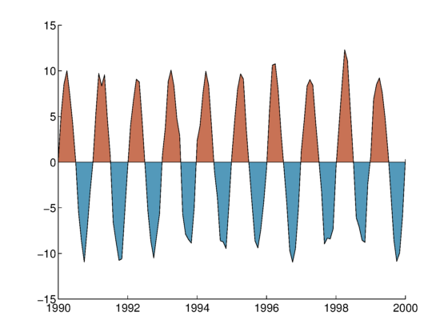
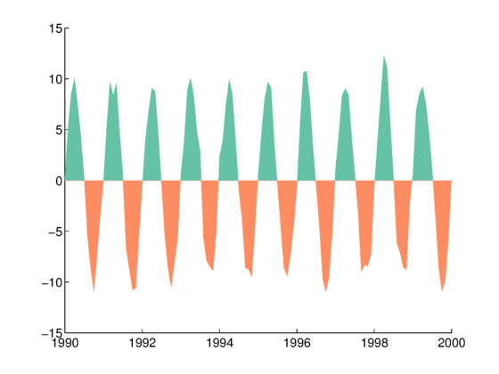
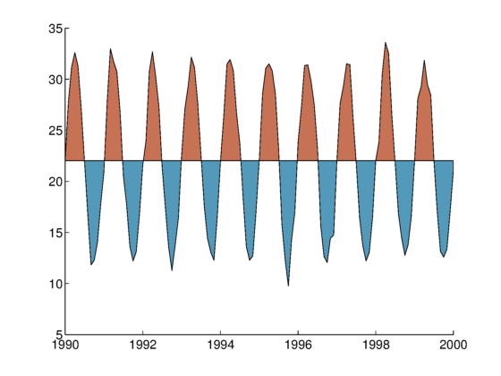

anomaly documentation
The anomaly function plots line data with different colors of shading filling the area between the curve and a reference value. This is a common way of displaying anomaly time series such as sea surface temperatures.
Contents
Syntax
anomaly(x,y) anomaly(...,'base',basevalue) anomaly(...,'topcolor',ColorSpec) anomaly(...,'bottomcolor',ColorSpec) anomaly(...,'PatchProperty',PatchValue) [htop,hbot] = anomaly(...)
Description
anomaly(x,y) plots a black line with red filling the area between zero and line any line values above zero; blue fills the area between zero and any values below zero.
anomaly(...,'base',basevalue) specifies a reference value other than zero. This can be useful if you're plotting temperatures relative to some average temperature value.
anomaly(...,'topcolor',ColorSpec) specifies the top color shading, which can be described by RGB values or any of the Matlab short-hand color names (e.g., 'r' or 'red').
anomaly(...,'bottomcolor',ColorSpec) specifies the bottom shading color.
anomaly(...,'PatchProperty',PatchValue) sets any patch properties such as edgecolor or linewidth.
[htop,hbot] = anomaly(...) returns the graphics handles of the top and bottom plots, respectively.
Example 1: Simple
Plot this sample data:
x = 1990:1/12:2000; y = 10*sin(2*pi*x) + randn(size(x)); anomaly(x,y)
Example 2: Specify shading colors and line properties
Using the same x and y data as above:
anomaly(x,y,'edgecolor','none',... 'topcolor',[0.4 0.7608 0.6471],... 'bottomcolor',[0.9882 0.5529 0.3843])
Example 3: Anomalies about a nonzero value
Sometimes anomalies are not relative to zero, but are relative to their mean. Perhaps you have some temperature values that fluctuate around 22 degrees:
anomaly(x,y+22,'base',mean(y+22))
 Author Info
This function was written by Chad A. Greene of the University of Texas Institute for Geophysics (UTIG), January 2017.